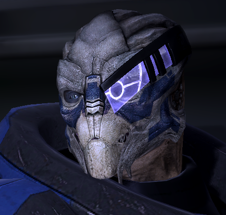

The Citadel Council is the governing body of the Citadel. Convening in the Citadel Tower, the Council is the ultimate authority in Citadel space, passing judgement for violations of Council law, settling disputes between governments, and maintaining law and order.
The current asari representative on the Council is Messana Tevos, who is flexible, diplomatic, and more than willing to negotiate and compromise in the interests of stable long-term settlement of disputes.
Representing the turians on the Council is Laiel Sparatus. Never one to act rashly, Sparatus was a respected fleet admiral within the turian hierarchy before his assignment to the Council.
Salarians are represented by Bensin Valern, a respected orator of Clan Bensin who likes to end any wars before they are started.
The newest species to be granted a seat on the Council, the humans are represented by Donnel Udina after having displayed remarkable courage and selflessness in the battle against Sovereign.
Never interfere with the work of the keepers.
Treat others with respect and patience.
Trust in C-Sec and report anything suspicious.
The Presidium is the gleaming heart of the Citadel. It is home to the embassies for all of the species represented in the Citadel.
The Citadel Tower is at the epicenter of the Citadel. From here, all Council decisions are made, decisions that shape the galaxy and the beings within its space.
The five "arms" of the Citadel are known as the Wards. They are the residential centres of the Citadel, each essentially a self-contained city home to millions.
The C-Sec Academy houses a variety of offices, training rooms, interrogation rooms and other operations that are maintained by the police force.
You will never find a more wretched hive of scum and villainy. Kasumi Goto
It really hasn't been the same ever since the Battle for the Citadel. Garrus Vakarian
I wonder if there are fish in the Presidium lake.
Urdnot Wrex